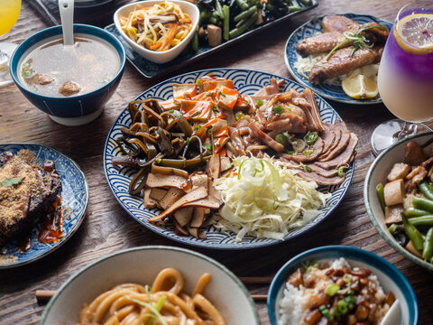
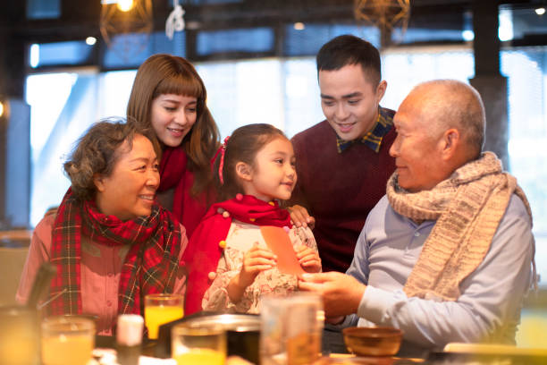
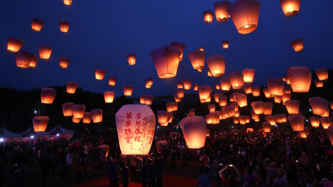
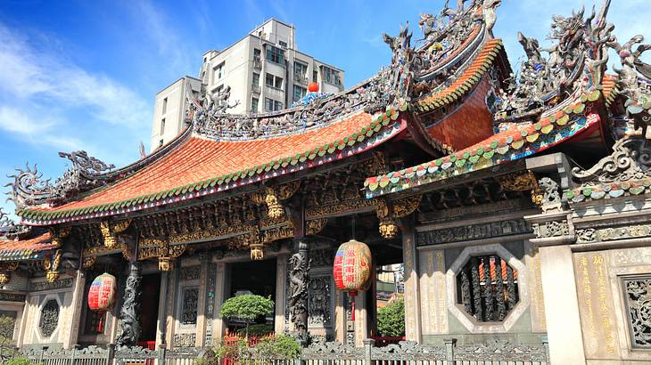

The Food
Based on the cuisine of Taiwanese indigenous peoples and over hundred years of historical development, Taiwanese cuisine influenced by Hakka, Waishengren and Japanese cuisine, finally take the Hoklo people's cuisine as its major form. Taiwanese culinary history is murky and is intricately tied to patterns of migration and colonization. Both locally and internationally Taiwanese cuisine, particularly its history, is a politically contentious topic. Pork, seafood, chicken, rice, and soy are common ingredients.
The People
Taiwanese indigenous peoples are the indigenous peoples of Taiwan. They speak languages that belongs to the Austronesian language family, and are culturally, genetically and linguistically closely related to the ethnic groups of Maritime Southeast Asia and Oceania. According to government figures, over 95% of Taiwan's population of 23.4 million consists of Han Chinese, while 2.3% are Austronesian Taiwanese indigenous peoples.
The Culture
Taiwan’s culture may be described as traditional and conservative, like most other Asian cultures but to a greater degree. It is mainly Chinese in origin and is patriarchal and patrilineal, with the family at the centre of cultural activities. Taiwan’s culture, however, has also been influenced by traditional Japanese culture, which was more clan-oriented and feudal and gave high status to the military.
The Architecture
The architecture of Taiwan can be traced back to stilt housing of the aborigines in prehistoric times; to the building of fortresses and churches in the north and south used to colonize and convert the inhabitants during the Dutch and Spanish period; the Tungning period when Taiwan was a base of anti-Qing sentiment